Originally published in Mada Masr on 6 April 2021
By Ismail Fayed
What would art during a pandemic look like? What would art right at the moment when our very survival is suspect, look like? I thought about this as I made my way to downtown Cairo (cautiously, furtively — downtown Cairo has definitely become a contested site), relieved and excited that Roznama 8 actually managed to take place, thanks to the work and support of many individuals and institutions. The competition-based exhibition, first launched in 2006, went into hiatus and was revived again in 2013 with successive annual editions (Roznama 2 to 5, Roznama 6 was controversially canceled due to insufficient applications and the jury's decision that the works submitted lacked the usual quality of previous editions) with Roznama 7 being the last edition in 2019. The competition established itself as a platform for young Egyptian artists that are more interested in non-conventional practices, outside the academy, and for digital arts and avant-garde practices.
Eslam Abd El Salam, Until Further Notice
I was curious and almost emotionally detached, as I walked into this year's exhibition, considering how I, like many others, have not actually been in an exhibition physically for quite some time.
Although artists are, by virtue of their practice, sometimes solitary, it is hard to imagine art transposed to a strictly virtual or digital dimension. Something is definitely lost when the interaction between a spectator and an artwork is strictly mediated by a digital or cyber interface, raising many questions about what is left of art when stripped of its social dimension. More crucially, as the curatorial statement itself of the exhibition says, the very survival of contemporary art in Egypt, as it developed over the past 20 years, remains a pressing, if not rather depressing, question.
As Roznama is a competition and not necessarily bound by thematic concerns, I had no particular expectations as to its conceptual framework or even curatorial approach. Competitions by definition bring a wide variety of contributions and many might be completely unrelated. I personally thought I had a cue from the poster, with its image of a sleeping bat, a satirical nod to the origins of the current coronavirus, a gesture I found funny but also slightly morbid. To my surprise, not very many of the works directly dwelled on or even clearly referenced the pandemic or the fragility of human existence in face of a viral outbreak. The bat was a mere visual token, and the majority of the works rather showed a generalized anxiety about the world and the usual uncertainty, and inchoateness of a young artwork. The fact that many works came across as germinal, premature and rushed made a stark impression, when compared with other works that were formalistically and conceptually more developed and complex.
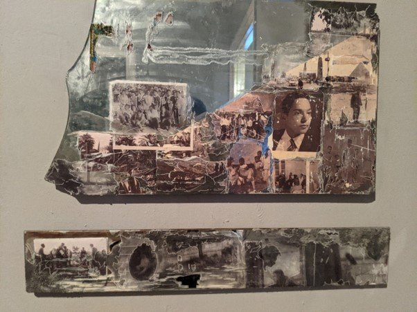
Amina Kadous, Objects in Mirror Are Closer Than They Appear
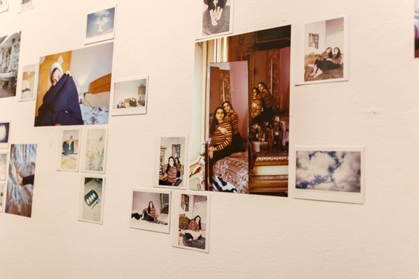
Eslam Abd El Salam, Until Further Notice
Some artworks were completely reflective of their times: the experience of being under lockdown and not being able to engage much with the outside world, inevitably raising questions about thinking and being in a domestic space, a certain kind of interiority, that only isolation can impose. Eslam Abd El Salam's photography Until Further Notice at the Contemporary Image Collective, and Amina Kadous's mixed media Attention: Objects in Mirror Are Closer Than They Appear (CIC) both try to decipher the meaning and experience of a domestic and personal space and how we often overlook the layers and layers of relationalities embedded in our experiences of such spaces, dulled by the sheer force of habit or habituation of the everyday. Expanding this further, Hagar Ezzeldin's installation The Book of the Invisible Labour (CIC) and Rania Atef's texts and drawings Conversations in the Beehive (CIC) attempt to critique the often ignored reality of a domestic space, a space that is always feminized and relegated to women, whose presence is hidden, but also their labor in maintaining and sustaining such space. Ezzeldin's installation and artist book show a remarkable sensitivity in trying to capture the notions of invisibility and habit when it comes to the work of women. In a more direct nod to the domestic space and what women do, Nourhan Mayouf's video Wanna Squeeze?, at Medrar, hits directly at the limitations imposed on artists and particularly women artists during the lockdown. Mayouf's video of several filmed conversations between herself and other women artists from different parts of the world is perhaps the most "pandemic-sensitive" work in the entire exhibition.
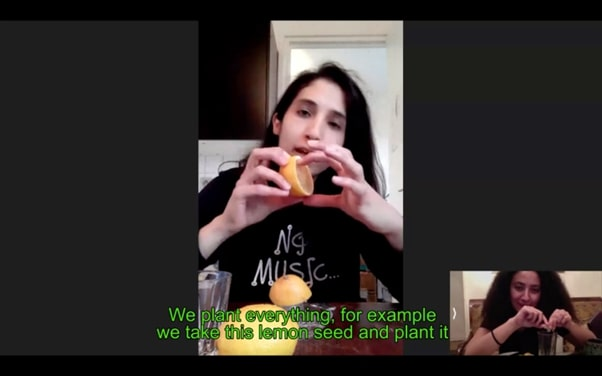
Nourhan Mayouf, Wanna Squeeze, video
For many, the experience of being confined or under lockdown for a long time, coupled with the experience of loss (of family or friends) necessitates a reflection on memory and how we understand the fragility and unpredictability of the narratives we construct of ourselves and those around us. Fatma Mostafa's installation Dyed Green (CIC), a delicate play with materiality and presence and absence, and Marwa Benhalim's video The Void Remembers (CIC) both give an insight into the fragility and almost endless possibilities of reconfiguration and remembrance.
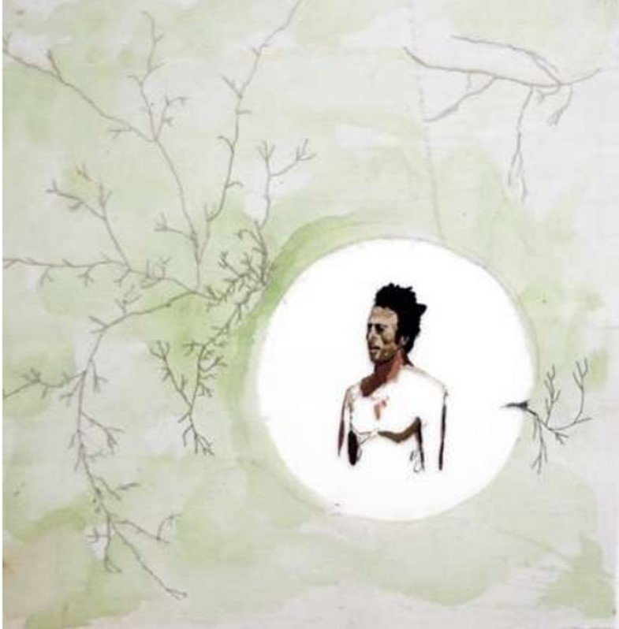
Fatma Mostafa, Dyed Green, installation
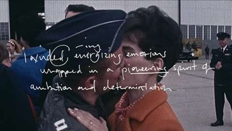
Marwa Benhalim, The Void Remembers, video
Other works that tried to reflect on the experiences associated with the pandemic were sometimes playful, as in Amal Hamada's illustrations Am I Changing or the World Is? (CIC), and other times contemplative and dreamy, as in Esraa El Feky's video The 3-Day Effect (CIC). Some had a scientific bent, a quasi biological determinism that looks antiquated but still relevant, as in Amir Abdelghany's installation Evolution Is the Most Documented Proven Fact in Science (Medrar) and Rodeina Fouad's installation Nymph (CIC).
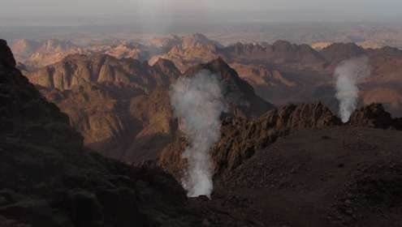
Esraa El Fekry, The 3-Day Effect, video
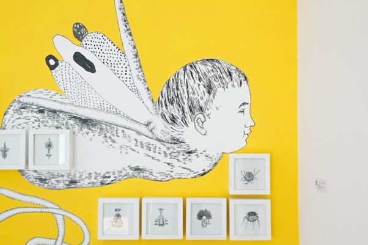
Amir Abdelghany, Evolution Is the Most Documented Proven Fact in Science, installation
Some artists reminded us that not everyone experienced the lockdown and the pandemic in the same way. Some might have been forced to continue with work or other kinds of activities, a reminder that many Egyptians actually had to go on with their daily struggles to make a living, even under a pandemic. Ahmed Qabel's black and white photography series Cairo Back and Forth (CIC) is a surprising series for its humanity and compositional finesse. The series shows the journey in a train, back and forth, with people engaging in all kinds of ways to survive the journey.
One might question the big elephant in the room, which is the extremely oppressive political context in which all these artists have been working under and that is the absent/present background noise to everything we see and experience in Egypt right now. And not very surprisingly, very few artworks actually touched upon what might be deemed as "political", in the sense of questioning the distribution and machinations of power. The political can be understood as a direct position against political authority, a citizen versus a government, but it is also diffused in all social constellations under that political authority. We can think that quite a large spectrum of configurations exists, as to how artists understand the political and choose to engage, represent, depict or even abstain from dealing with it, as all "political decisions." But in the current particular context of Egypt, the more direct sense of the political, as a subordinated, obscenely unequal, relationship to an authority, overshadows any other notion of the political. Without question, one cannot really criticize artists in any way for avoiding making political statements or political undertones, but it's a glaring absence that points to an overwhelming, violent present reality.
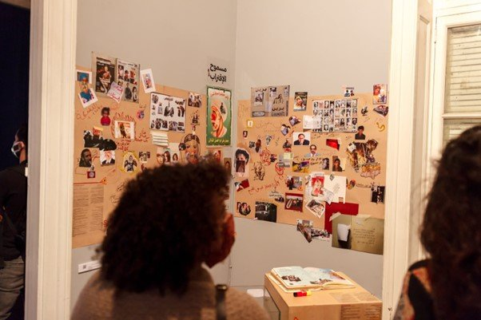
Ali Zaraay, On Unfinished and Unfinishable Work, mixed media
The few works that did, used different strategies to overcome those formidable constraints. They all seem to be strategies that converge on silence, omission and subversion. An ingenious attempt (but heartbreaking to think about) of trying to think through fear of possible repercussions. Some used over-identification, like Ali Zaraay's mixed media On Unfinished and Unfinishable Work (CIC). Zaraay's work takes cue from the current demolition of many areas of historical and residential Cairo to construct a massive network of bridges and highways that connects the old city to the "new capital". In direct reference to this demolition, Zaraay invites the audience to "demolish" his own work (a collage of news clippings, photos, mementos that memorialize all kinds of experiences the artist witnessed) and recreate it as they please. Others used symbolic abstraction like Helena Abdelnasser's installation Toy Studies (Medrar), a series of illustrations accompanied by a manifesto, that uses a radical Marxist critique of commodity fetishism to posit the necessity of analyzing an object in order to rid oneself of any emotional attachment to it. And some resorted to fiction, like Malak Yacout's publication A Crack is a Sign… of Retreat Into Fiction (Medrar), an artist book that contains a partly fictionalized exchange about a video that cannot be screened, juxtaposed with medical imaging of an eczema condition. The work tries to point out the resonance between what might manifest itself indirectly (for no apparent reason, like an eczema condition) through a crack and what is silenced and has to retreat only to be manifested in other ways.
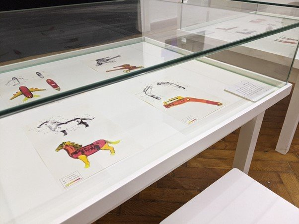
Helena Abdelnasser, Toy Studies, installation
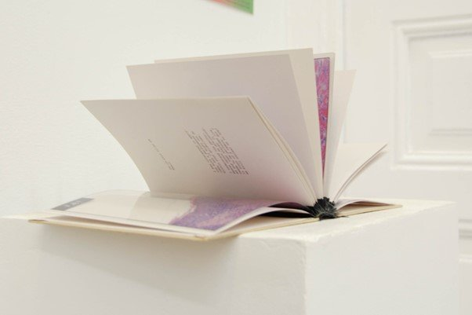
Malak Yacout, A Crack is a Sign… of Retreat Into Fiction, artist book
One work that stood out for me was Muhammad Salah's video A Documentary Video (CIC), which deservedly won a prize. The video is irreverent, cynical and perhaps the perfect antidote to everything we expect a contemporary art video to be about. A biting commentary on being an artist, making a film and wanting to be famous, the video reveals an astonishing integrity that is conveyed with humor and panache.
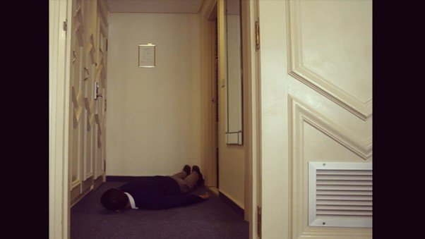
Muhammed Salah, A Documentary Video, video
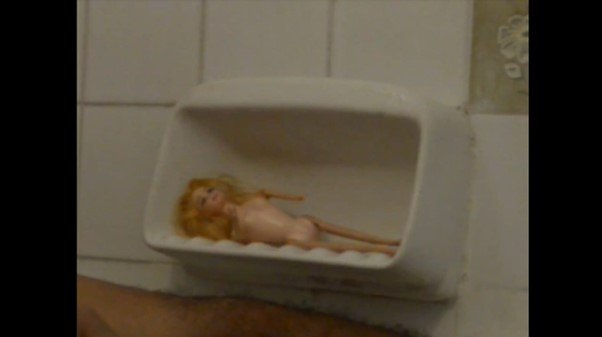
Muhammed Salah, A Documentary Video, video still
After seeing the exhibition, I kept thinking of curator Narimane Abo El Seoud's question, in her statement, about Roznama 8 being an opportunity to think about the survivability of contemporary art as we have come to know it in Egypt. From what we saw in those artworks, there are clearly promising and interesting artists who can continue to develop work and ideas. The question is not whether we will continue to have artists who can produce artworks. Rather, the more difficult question pertains to problematics that have endured since the 1990s. The greatest risk we are facing is the constant erasure of history that resets everything again to point zero.
The works that have been done over the past two decades or more, and the community of artists, audiences and institutions that has been formed is being erased, silenced and sidelined. And in an atmosphere of unprecedented censorship and persecution, there is very little chance that we have this conversation and ask those difficult questions. Are we fine with erasing the past two or three decades? What does that mean for the history of artistic practices in Egypt? And what does that mean for artists from that generation who are still trying to work in Egypt? What happens to all the artistic practices and work that was produced? Will it be consigned to oblivion or, like Marwa Benhalim's video, will it acquire another life in random, non-linear reconfigurations?
Art at the end of the world is still art; it's slightly more anxious, contemplative and even dreamy. But it reminds us that it can only be possible through a shared community, that it is embedded in inter-subjective interactions and encounters, and that it remains silent until we, artists and audiences, make it speak.